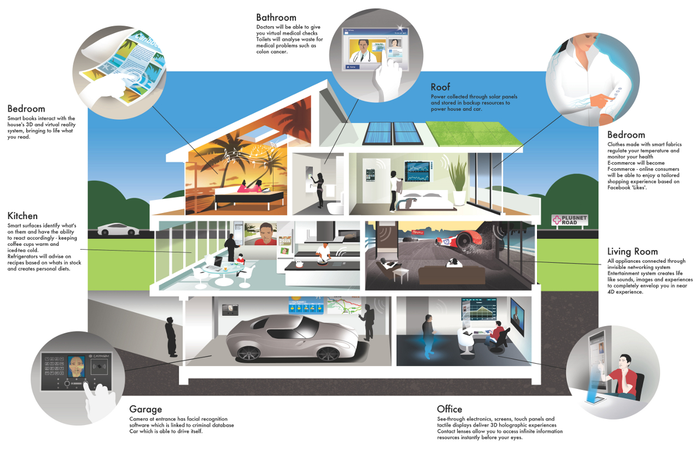

Nhà thông minh (tiếng Anh là “Smart Home”) hoặc hệ thống nhà thông minh là một ngôi nhà/căn hộ được trang bị hệ thống tự động tiên tiến dành cho điều khiển đèn chiếu sáng, nhiệt độ, truyền thông đa phương tiện, an ninh, rèm cửa, cửa và nhiều tính năng khác nhằm mục đích làm cho cuộc sống ngày càng tiện nghi, an toàn và góp phần sử dụng hợp lý các nguồn tài nguyên. Nhà thông minh sử dụng các thiết bị kết nối Internet để có thể quản lý và giám sát các thiết bị và hệ thống từ xa như ánh sáng và nhiệt độ.
Công nghệ nhà thông minh Smart Home, còn được biết đến như Home Automation (tự động hóa ngôi nhà), cung cấp cho chủ nhà sự an toàn, thoải mái, tiện lợi và tiết kiệm năng lượng bằng cách cho phép họ kiểm soát các thiết bị thông minh bởi một ứng dụng smart home trên điện thoại smartphone hoặc các thiết bị kết nối mạng khác. Một phần của mạng lưới vạn vật kết nối (Internet of Things - IoT), các hệ thống và thiết bị nhà thông minh thường hoạt động cùng nhau, chia sẻ dữ liệu người dùng và tự động hóa các hành động dựa trên quyền ưu tiên của chủ nhà.
Với việc phát hành X10 năm 1975, một giao thức truyền thông cho Home Automation, nhà thông minh, khi đó chỉ là một giấc mơ viển vông trong serie phim hoạt hình “Gia đình nhà Jetsons” (The Jetsons) đã xuất hiện trong cuộc sống thực. X10 gửi tín hiệu 120 kHz (radio frequency - RF) của thông tin số lên hệ thống dây điện hiện tại trong nhà đến các đầu ra hoặc công tắc có thể lập trình được. Các tín hiệu này truyền tải lệnh đến các thiết bị tương ứng, kiểm soát cách thức và thời gian hoạt động của thiết bị. Ví dụ: một máy phát có thể gửi tín hiệu dọc theo dây điện trong nhà, yêu cầu bật thiết bị vào một thời gian cụ thể.
Tuy nhiên, vì dây điện không được thiết kế đặc biệt chống nhiễu sóng radio nên X10 không phải lúc nào cũng đáng tin cậy. Các tín hiệu sẽ bị mất và trong một số trường hợp, các tín hiệu không vượt qua các mạch nối với các cực khác nhau, được tạo ra khi dịch vụ 220 volt tách ra thành một cặp nguồn cấp dữ liệu 100 volt, phổ biến ở Hoa Kỳ. X10 ban đầu là công nghệ một chiều, do đó các thiết bị thông minh có thể thực hiện lệnh nhưng không thể gửi dữ liệu trở lại mạng trung tâm. Sau đó, các thiết bị X10 hai chiều được sản xuất với chi phí cao hơn.
Khi công ty tự động hóa nhà Insteon xuất hiện vào năm 2005, công ty đã giới thiệu công nghệ kết nối dây điện với tín hiệu không dây. Các giao thức khác, bao gồm cả Zigbee và Z-Wave, được đưa ra để chống lại các vấn đề có thể xảy ra với X10, mặc dù X10 vẫn là một giao thức truyền thông được cài đặt rộng rãi cho đến hiện nay.
Nest Labs được thành lập năm 2010 và phát hành sản phẩm thông minh đầu tiên Nest Learning Thermostat vào năm 2011. Công ty cũng tạo ra máy dò khói/cacbon monoxide thông minh và camera an ninh. Sau khi Google mua lại vào năm 2015, Nest Labs đã trở thành công ty con của Alphabet Inc. trong năm đó.

Vào năm 2012, SmartThings Inc. đã phát động chiến dịch Kickstarter, huy động ngân sách 1,2 triệu đô-la để hỗ trợ hệ thống nhà thông minh. Sau khi bổ sung ngân sách, công ty đã ra mắt thị trường vào tháng 8 năm 2013 và được Samsung mua lại vào năm 2014.
Gần đây, các công ty bao gồm Amazon, Apple và Google đã đưa ra các sản phẩm Smart Home và nền tảng Smart Home của họ, bao gồm Amazon Echo, Apple HomeKit và Google Home.
Công nghệ dường như đã đặt chân đến mọi khía cạnh của cuộc sống, bao gồm cả không gian nội thất nhà ở (bóng đèn, máy rửa bát và…). Sự ra đời của nhà thông minh như một giải pháp thay thế hiện đại.
Một trong những lợi ích nổi bật nhất của tự động hóa ngôi nhà là cung cấp sự an tâm cho chủ nhà, cho phép họ quan sát nhà từ xa, chống lại những nguy hiểm như máy pha cà phê bị bỏ quên hoặc cửa phía trước quên chưa khóa
Nhà thông minh còn có lợi cho người cao tuổi, cung cấp sự giám sát giúp người cao tuổi được ở nhà thoải mái và an toàn hơn là chuyển đến nhà dưỡng lão hoặc yêu cầu chăm sóc tại nhà 24/7.
Không có gì đáng ngạc nhiên khi nhà thông minh có thể thích ứng với sở thích của người dùng. Ví dụ, ngay khi bạn về đến nhà, cửa nhà để xe sẽ mở, đèn sẽ sáng, lò sưởi sẽ bật và các giai điệu yêu thích của bạn sẽ bắt đầu phát trên loa.
Home automation giúp người dùng nâng cao hiệu quả. Thay vì để máy điều hoà không khí chạy liên tục vào ban ngày, hệ thống nhà thông minh có thể học các hành vi của bạn và đảm bảo ngôi nhà sẽ được làm mát khi bạn trở về nhà. Tương tự với các thiết bị gia dụng: Hệ thống tưới nước thông minh, bãi cỏ của bạn sẽ được tưới nước khi cần thiết với một lượng nước vừa đủ. Đối với home automation, năng lượng, nước và các nguồn lực khác được sử dụng hiệu quả hơn, giúp tiết kiệm tài nguyên thiên nhiên và tiền bạc cho người dùng.
Hệ thống home automation nỗ lực trở thành xu thế chủ đạo, một phần là do tính chất kỹ thuật của chúng. Một hạn chế của nhà thông minh là sự phức tạp trong cảm nhận, một số người gặp khó khăn khi sử dụng công nghệ hoặc sẽ từ chối sử dụng vì cảm thấy khó chịu ngay lần đầu. Các nhà sản xuất nhà thông minh và đối tác của họ đang cố gắng để giảm tính phức tạp và cải thiện trải nghiệm người dùng, làm cho nó trở nên thú vị cũng như có lợi cho người sử dụng ở mọi độ tuổi và trình độ.
Đối với các hệ thống home automation thực sự có hiệu quả, các thiết bị phải tương tác với nhau bất kể nhà sản xuất của chúng là ai, sử dụng cùng một giao thức hoặc ít nhất, bổ sung thêm một giao thức khác. Vì là một thị trường mới nên chưa có tiêu chuẩn vàng nào dành cho home automation. Tuy nhiên, các liên minh tiêu chuẩn đang hợp tác với các nhà sản xuất và các giao thức để đảm bảo khả năng tương tác và trải nghiệm người dùng không bị gián đoạn.
Một vấn đề chính khác là an ninh nhà thông minh. Báo cáo năm 2016 của NTT Data Corp. cho thấy rằng 80% người dùng Mỹ quan tâm đến tính bảo mật dữ liệu smart home của họ. Nếu tin tặc có thể xâm nhập vào một thiết bị thông minh, họ có thể tắt đèn, tắt báo thức và mở khóa cửa ra vào để đột nhập. Hơn nữa, tin tặc có thể truy cập vào mạng của chủ nhà, dẫn đến các cuộc tấn công tồi tệ hơn hoặc rò rỉ dữ liệu (Data Exfiltration).
Vào tháng 10 năm 2016, Mirai IoT botnet (botnet Mirai IoT) đã làm sập một phần của Internet bằng một loạt cuộc tấn công từ chối dịch vụ phân tán ( tấn công DDoS - Distributed Denial of Service ) sử dụng camera an ninh, máy quay DVR và bộ định tuyến.
Ngoài việc bảo mật, nhiều người không thích nhà thông minh vì lo lắng về dữ liệu riêng tư. Báo cáo NTT Data cho thấy 73% người dùng quan tâm đến dữ liệu riêng tư được chia sẻ bởi các thiết bị smart home. Mặc dù các nhà sản xuất thiết bị smart home và nhà sản xuất nền tảng có thể thu thập dữ liệu người dùng để điều chỉnh sản phẩm của họ tốt hơn, hoặc cung cấp các dịch vụ mới cải tiến cho khách hàng, nhưng sự tin tưởng và minh bạch là điều quan trọng để các nhà sản xuất xây dựng lòng tin với người sử dụng các sản phẩm thông minh của họ.
Những căn nhà mới thường được xây dựng trên cơ sở hạ tầng thông minh tại chỗ. Mặt khác, các ngôi nhà cũ hơn có thể được trang bị công nghệ thông minh. Mặc dù nhiều hệ thống smart home vẫn chạy trên X10 hoặc Insteon nhưng Bluetooth và Wi-Fi đã trở nên phổ biến.
Zigbee và Z-Wave là hai trong số các giao thức truyền thông home automation phổ biến nhất được sử dụng ngày nay. Cả hai công nghệ mạng lưới đều sử dụng tín hiệu radio tầm ngắn, công suất thấp để kết nối các hệ thống smart home. Mặc dù cả hai đều nhắm đến những ứng dụng smart home, nhưng Z-Wave có phạm vi cách hơn 30 mét so với 10 mét của Zigbee và Zigbee thường được cho là phức tạp hơn. Các chip Zigbee có sẵn từ nhiều công ty, trong khi các chip Z-Wave chỉ có sẵn từ Sigma Designs.
Nhà thông minh không phải là các thiết bị và ứng dụng riêng biệt, chúng làm việc cùng nhau để tạo ra một mạng lưới có thể điều khiển từ xa. Chủ nhà điều khiển tất cả các thiết bị được kiểm soát bởi một bộ điều khiển tự động, được gọi là smart home hub. Smart home hub là một thiết bị phần cứng hoạt động như điểm trung tâm của hệ thống smart home có thể cảm nhận, xử lý dữ liệu và truyền thông không dây. Nó kết hợp tất cả các ứng dụng riêng lẻ vào một ứng dụng smart home duy nhất có thể được kiểm soát từ xa bởi chủ nhà. Ví dụ các smart home hub bao gồm Amazon Echo, Google Home, Insteon Hub Pro, Samsung SmartThings và Wink Hub.
Một số hệ thống smart home được tạo ra từ đầu, ví dụ như sử dụng Raspberry Pi hoặc bảng mạch mẫu thử nghiệm. Những sản phẩm khác có thể được mua như một bộ smart home kit - còn được gọi là nền tảng smart home - có chứa các phần cần thiết để bắt đầu dự án tự động hóa nhà ở.
Trong các mô hình smart home đơn giản, các sự kiện có thể được tính giờ hoặc kích hoạt. Sự kiện tính giờ dựa theo đồng hồ, ví dụ như hạ thấp rèm vào lúc 6 giờ chiều, sự kiện được kích hoạt dựa trên hành động trong hệ thống tự động; như khi điện thoại thông minh của chủ nhà đến gần cửa, khóa thông minh sẽ mở ra và đèn thông minh sẽ sáng lên.
Machine learning và trí tuệ nhân tạo (AI) ngày càng trở nên phổ biến trong các hệ thống smart home, cho phép các ứng dụng home automation thích ứng với môi trường của họ. Các hệ thống kích hoạt bằng giọng nói, chẳng hạn Amazon Echo hoặc Google Home, có các trợ lý ảo trợ giúp tìm hiểu và cá nhân hóa smart home với sở thích và hành vi của người dùng.